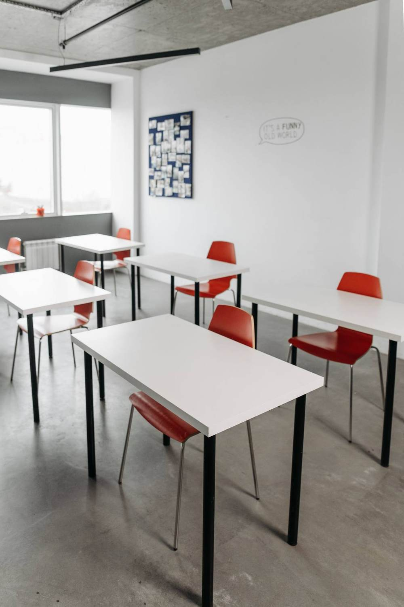
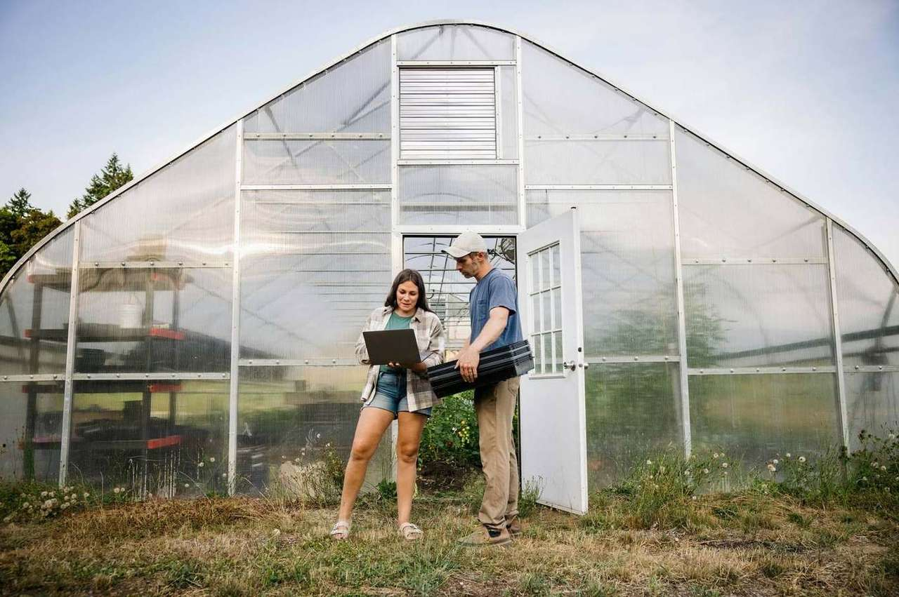
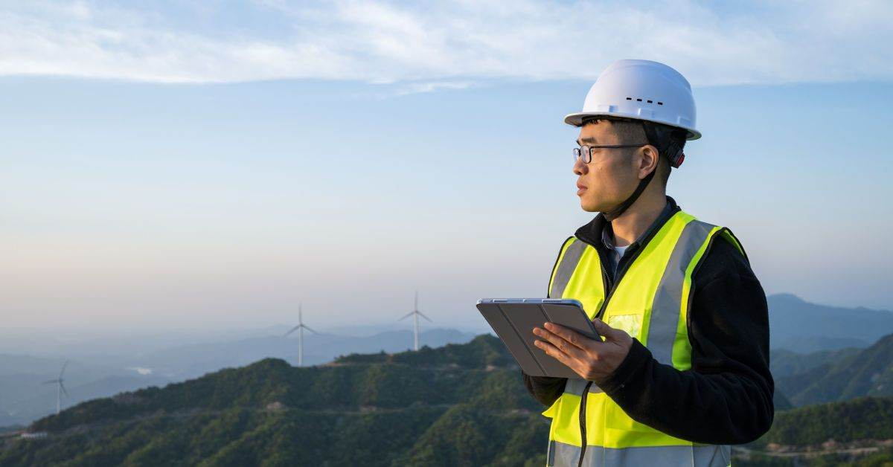
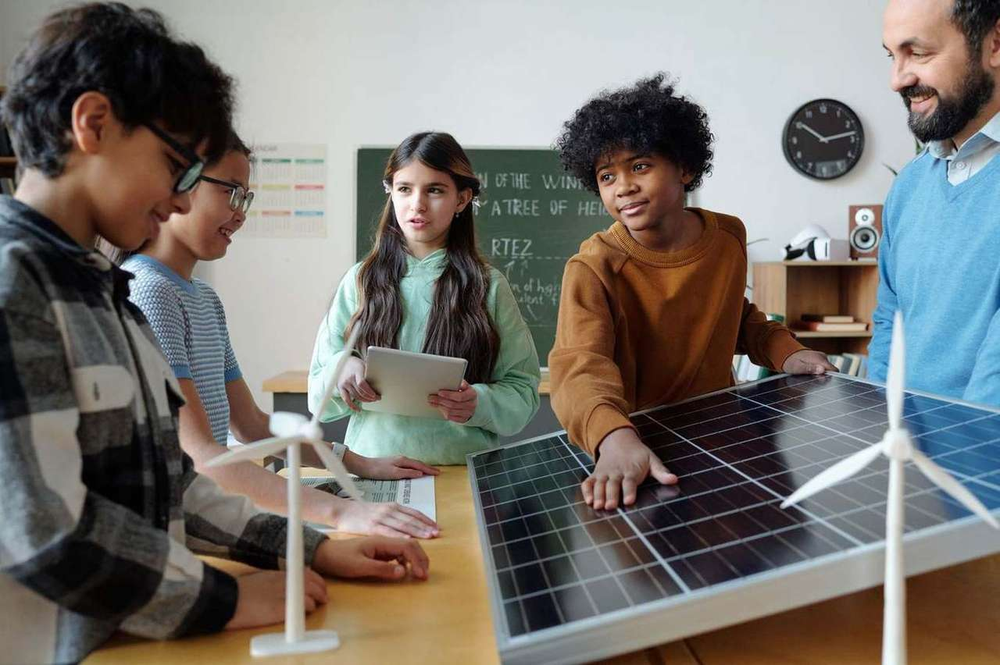
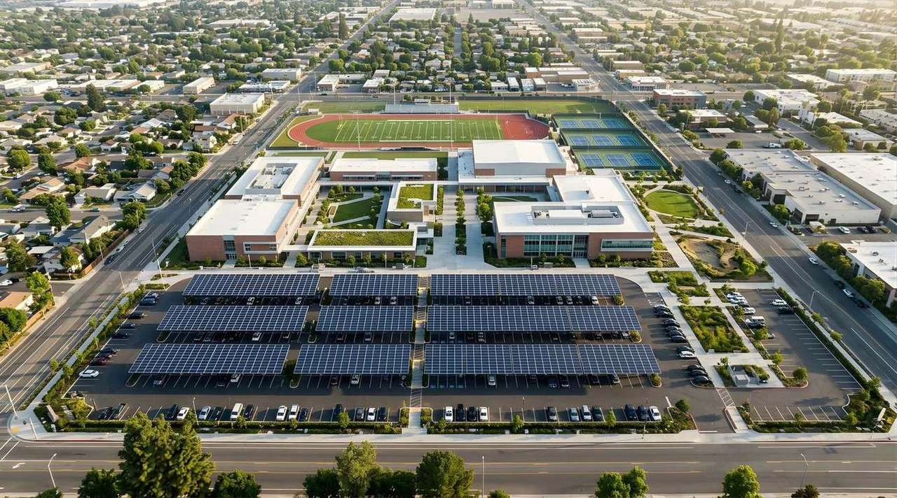

Meet Mexico · Profiles
Our Women in Engineering
Six engineers in Hitachi Energy Mexico leading the way for equality in STEM.
hitachienergy.com ↗
Electricity has just become the world's largest energy employer. And for every young person joining in advanced economies, more than two are heading for retirement.
Every promise made about the next twenty-five years carries an unspoken assumption. That when the money is approved and the permits are signed, somebody will be standing there who knows how to do the work.
That assumption is now the weakest part of the plan.
Seventy-six million people work in energy worldwide, five million more than in 2019. And something happened recently that almost nobody outside the industry noticed.
Around 60% of energy companies report labour shortages, with timelines, reliability and cost control all at risk. In the power sector, estimates of the engineering shortfall run to between 450,000 and 1.5 million people by 2030.
The gap is sharpest in exactly the roles that build things. Electricians, line workers, plant operators - applied technical trades, not office jobs. Demand for applied technical workers grew 16% between 2015 and 2022. Graduations from the relevant vocational programmes grew 9%. The gap has been widening for a decade.
Capital is no longer the binding constraint on electrification. Permits are a constraint, supply chains are a constraint, and increasingly so are people. A converter station waiting three years for a commissioning team is as delayed as one waiting for a transformer.
Here is the part that ought to change the conversation. Closing the gap means raising the number of new qualified entrants by 40% - and doing that costs around $2.6 billion a year globally.

We employ 51,253 people across 67 countries, representing 170 nationalities. A workforce that size is not just an operation. It is a pipeline, and we treat it as one.
The Global Power+ Graduate Development Programme began in 2021 to bring graduates into the industry and grow them toward leadership. Since then we have hired 247 graduates: 83 are in the programme now and 144 have moved into permanent roles. In South Africa, eight participants recently completed a formal management qualification.
The people who will build tomorrow's grid, and why the work starts now.
Read · 4 min →Closing the skills gap, one engineer at a time, across 60 countries.
Read · 3 min →But recruiting is the visible half, and the easier one. The more useful work starts earlier and further out.
We partner with schools to activate interest in science, technology, engineering and maths, and to open routes into internships and summer jobs - run by employee volunteers doing mentoring and tutoring. In India a dedicated programme brings female students into STEM. In Mexico, where women are close to half of all university students but only 38% of those studying STEM, our engineers put their own names and faces to that argument.

Stand-in portrait - replace with Dilip Kota ElfvingSix engineers in Hitachi Energy Mexico leading the way for equality in STEM.
hitachienergy.com ↗
How universities teach for an energy system changing faster than the syllabus.
hitachienergy.com ↗In Vietnam we donated an on-load tap changer to Ho Chi Minh City University of Technology, so students learn on the hardware they will actually meet in a substation rather than on a diagram.
And sometimes the constraint is not the curriculum. It is whether there is a school at all. Through BringKids2Schools and citizenship work in 26 countries, we have supported the construction of nine schools - seven in Malawi, two in Senegal - with four more going up, giving around 4,000 children access to education. Five have 32 kW solar systems, so the lights work.
The way they were funded is the part worth telling.

Career decisions are made around fifteen. If the industry is invisible at school, it loses the candidate years before the vacancy exists.
The shortage is in applied technical roles. More engineering faculties do not produce line workers.
Women are near half of students and a third of STEM. No workforce plan survives ignoring half the population.
Curricula have to keep pace with a system changing faster than textbooks, on equipment that exists in the field.
The retirement wave is a knowledge-transfer emergency. Mentoring is the only mechanism that moves it.
The transition is finished or it is not, and the difference is a generation of people who chose this work.
A fifteen-year-old who can name three jobs in the electricity industry. Vocational training treated with the seriousness of a degree. Women at half of the engineering intake instead of a third. And the knowledge in the head of an engineer retiring in 2030 still in the company in 2050, because somebody sat beside her and learned it.

51,253 people, 170 nationalities, 247 Power+ graduates, nine schools and the full account of how we grow the people who build the grid.
Everything published on this topic, in one place.